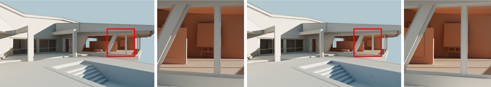

|
 (left) Real-time global illumination rendered using our method in 3.9ms with fully dynamic lights, cameras and diffuse surface materials. (right) Ground truth (converged path tracing). AbstractWe present a direct-to-indirect transport technique that enables accurate real-time rendering of indirect illumination in mostly static scenes of complexity on par with modern games while supporting fully dynamic lights, cameras and diffuse surface materials. Our key contribution is an algorithm for reconstructing the incident radiance field from a sparse set of local samples --- radiance probes --- by incorporating mutual visibility into the reconstruction filter. To compute global illumination, we factorize the direct-to-indirect transport operator into global and local parts, sample the global transport with sparse radiance probes at real-time, and use the sampled radiance field as input to our precomputed local reconstruction operator to obtain indirect radiance. In contrast to previous methods aiming to encode the global direct-to-indirect transport operator, our precomputed data is local in the sense that it needs no long-range interactions between probes and receivers, and every receiver depends only on a small, constant number of nearby radiance probes, aiding compression, storage, and iterative workflows. While not as accurate, we demonstrate that our method can also be used for rendering indirect illumination on glossy surfaces, and approximating global illumination in scenes with large-scale dynamic geometry.DownloadsBibtex
@article{Silvennoinen:2017,
author = {Ari Silvennoinen and Jaakko Lehtinen},
title = {Real-time Global Illumination by Precomputed Local Reconstruction from Sparse Radiance Probes},
journal = {ACM Transactions on Graphics (Proceedings of SIGGRAPH Asia)},
volume = {36},
number = {6},
year = {2017},
month = nov,
pages = {230:1--230:13},
url = {https://doi.org/10.1145/3130800.3130852},
doi = {10.1145/3130800.3130852}
}
Ari Silvennoinen, Sep 18 2017 |